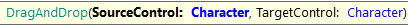
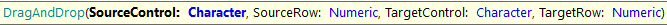

This command is useful for dragging and dropping a source control inside a target control.   Parameters
Example:
&driver.DragAndDrop("ControlX", "ControlY")
&driver.DragAndDrop("ControlX", 2, "ControlY", -1)
&driver.DragAndDrop("ControlX", -1, "ControlY", 1)
&driver.DragAndDrop("ControlX", 2, "ControlY", 4)
AvailabilityThis command is available since GeneXus 17 upgrade 2.
|
| Backlinks | |
| Changelog GXtest | Toc:GXtest v4 |